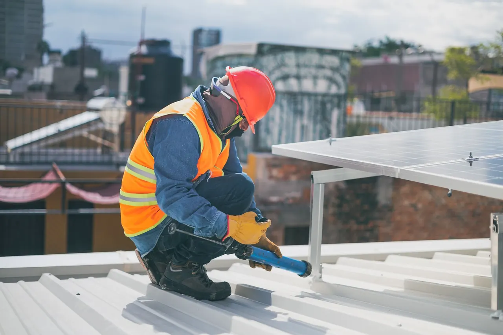
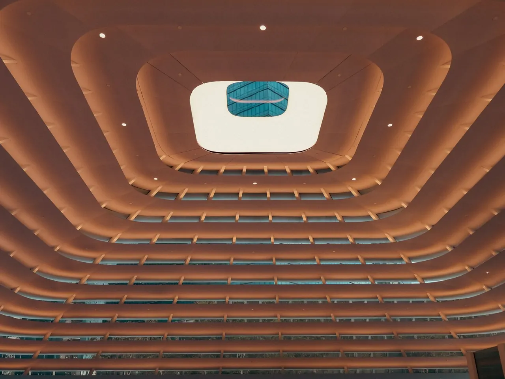
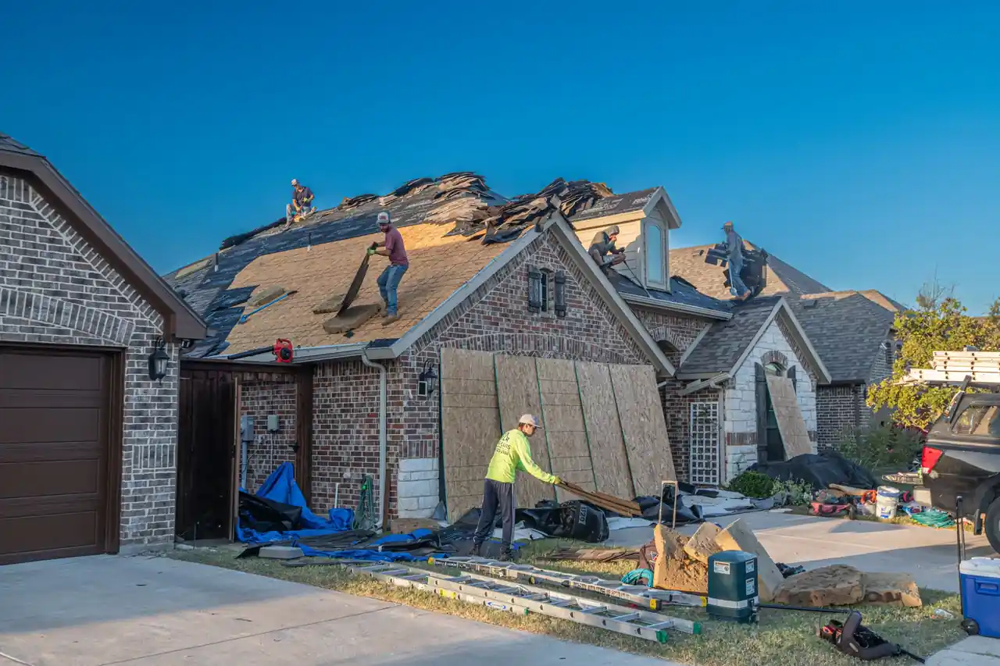
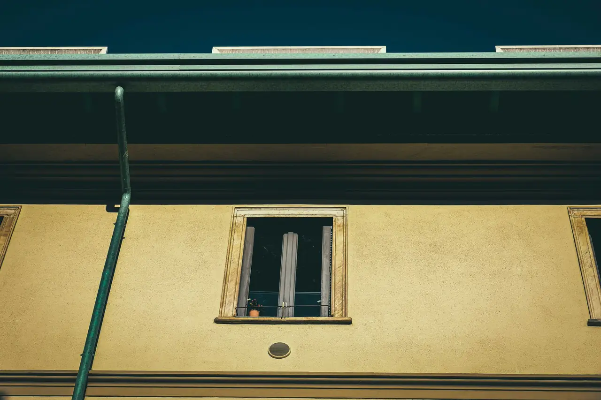
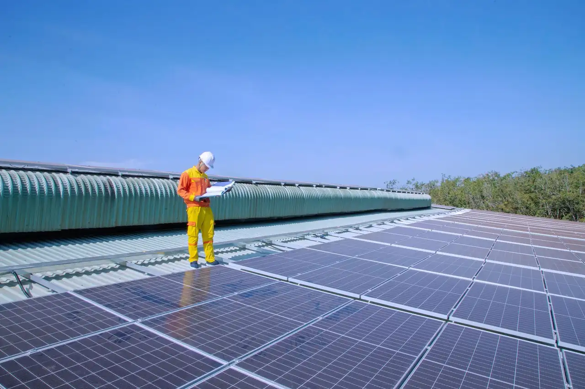

Focused arrival windows
Useful updates and clear arrival timing.

Storm Damage Repair Panama City FL is crucial for homeowners facing the aftermath of severe weather. Our affordable storm damage repair in Panama City ensures your roof is restored quickly and efficiently, protecting your home from further damage.
Useful updates and clear arrival timing.
Review the approach and price before deciding.
Equipped vehicles and respectful cleanup.
Neighbors serving neighbors with follow-through.
Our storm damage repair services cover a range of essential repairs to restore your roof's integrity and functionality.
A thorough inspection to assess the extent of the damage and identify necessary repairs.
Replacing missing or damaged shingles with high-quality materials to restore protection.
Addressing leaks promptly to prevent further water damage and mold growth.
Repairing or replacing flashing to ensure proper sealing around roof penetrations.
Share what is happening and receive a clear next step from the local team.
Storm Damage Repair Panama City FL is a specialized service that addresses the impacts of severe weather on roofs, including leaks, missing shingles, and structural issues. It involves assessing the damage, providing necessary repairs, and restoring the roof to its original condition.
Local Panama City customers need storm damage repair due to the frequent hurricanes and tropical storms that affect the area. These events can lead to significant roof issues, making it essential to seek prompt Panama City storm damage repair to prevent further complications.

The process begins with a thorough inspection of the roof to assess the extent of the damage. This step typically takes about an hour.
After the inspection, a detailed estimate is provided, outlining the necessary repairs and associated costs. Homeowners receive this within 24 hours.
Once the estimate is approved, the repair work is scheduled at a convenient time for the homeowner, usually within a week.
The repair team arrives to perform the necessary work, which can take anywhere from a few hours to a couple of days, depending on the damage.
After repairs, a final inspection ensures everything is up to code and the site is cleaned up, leaving the property as it was found.

Used for securing shingles efficiently during repairs.
Helps in accurately cutting shingles to fit during replacement.
Ensures the safety of our team while working at heights.
Used for applying roofing cement and sealing leaks.
We adhere to GAF Master Elite standards, ensuring high-quality materials and installation practices.
All repairs are done in compliance with the Florida Building Code, ensuring safety and durability.

Our team conducts a thorough inspection to assess damage and provide necessary repairs. Homeowners can rest easy knowing their roof is secure and protected from further weather events.
We address any leaks immediately to prevent water damage and mold growth in your home. Your home remains dry and safe, avoiding costly repairs down the line.
We replace missing shingles quickly to restore your roof's integrity. This prevents further damage and extends the life of your roof.
In Panama City, storm damage repair requires an understanding of local weather patterns and building codes. The area frequently experiences hurricanes, leading to specific roofing challenges. Our team is well-versed in local conditions, ensuring repairs are compliant with Florida Building Code and tailored to withstand future storms. We use high-quality materials from brands like CertainTeed and IKO to ensure durability.
Known for its older homes, which often require specialized storm damage repair techniques.
Homes in this area face unique challenges due to proximity to the coast.
Residents here often experience heavy rainfall, necessitating prompt repair services.
Can lead to significant roof damage, requiring immediate repairs to prevent further issues.
Increases the risk of leaks and water damage if roofs are not properly maintained.
A homeowner in Glenwood noticed water dripping from their ceiling after a storm.
After our storm damage repair, the leak was fully sealed, preventing any further water intrusion.
Maintenance: Regular roof inspections every year can help catch issues before they escalate.
In Northshore, a strong wind storm caused several shingles to blow off a house.
We replaced the missing shingles with new, durable ones, restoring the roof's integrity.
Maintenance: Homeowners should check their roofs after storms to ensure no shingles are missing.
Flashing around a chimney in South Panama City was damaged, leading to leaks.
Our team repaired the flashing, ensuring a watertight seal to prevent future leaks.
Maintenance: Inspect flashing regularly, especially after storms, to maintain roof integrity.
Storm damage repair addresses several critical issues that can arise after severe weather.
Ignoring roof leaks can lead to water damage inside your home, increasing repair costs. Our team quickly identifies and repairs leaks to prevent further damage and restore your home's safety.
Missing shingles leave your roof vulnerable to further weather damage and leaks. We replace missing shingles promptly, using durable materials to ensure long-lasting protection.
Improper flashing can cause leaks around chimneys and vents, leading to water intrusion. We repair or replace faulty flashing to ensure a watertight seal that protects your home.
$180 - $450 depending on scope
The cost of storm damage repair in Panama City varies based on the extent of the damage and materials required. Typically, prices range from $180 to $450 in 2026. Factors such as the type of material used, the complexity of repairs, and local labor rates can influence pricing. Our goal is to provide affordable storm damage repair Panama City options that don't compromise on quality.
Investing in quality storm damage repair now can save homeowners money in the long run by preventing further damage.
More extensive damage requires more materials and labor, increasing overall costs.
Using high-quality materials like GAF shingles can raise initial costs but provide better long-term value.
Local labor rates can affect total repair costs, especially during peak storm seasons.

With over 15 years of experience in storm damage repair, we are NRCA Certified and GAF Master Elite contractors, ensuring top-quality service.
After storm damage, immediately assess for safety hazards and contact a storm damage repair contractor in Panama City for a professional inspection.
We offer 24/7 storm damage repair in Panama City, typically responding within hours of your call to assess and begin repairs.
Common causes include high winds, heavy rain, and hail, which can lead to roof leaks, missing shingles, and structural damage.
Typical costs for storm damage repair in Panama City range from $180 to $450, depending on the extent of the damage and materials needed.
Not seeing your question? Our local team can help you understand urgency, scheduling and what to expect.
Ask the local team
Our roof installation services ensure a strong foundation for your home, complementing storm damage repairs.
View service
If repairs are insufficient, our roof replacement services provide a fresh start with durable materials.
View service
We offer comprehensive roof repair services that address both minor and major damage, ensuring your roof remains secure.
View service
Regular roof inspections can help prevent the need for extensive storm damage repairs in the future.
View service
We invite you to reach out for any roofing needs. Our team is available to assist you promptly, ensuring a quick response.